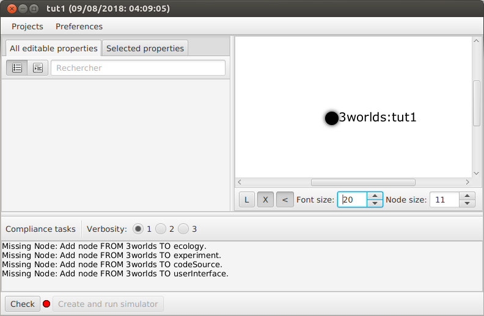
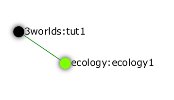
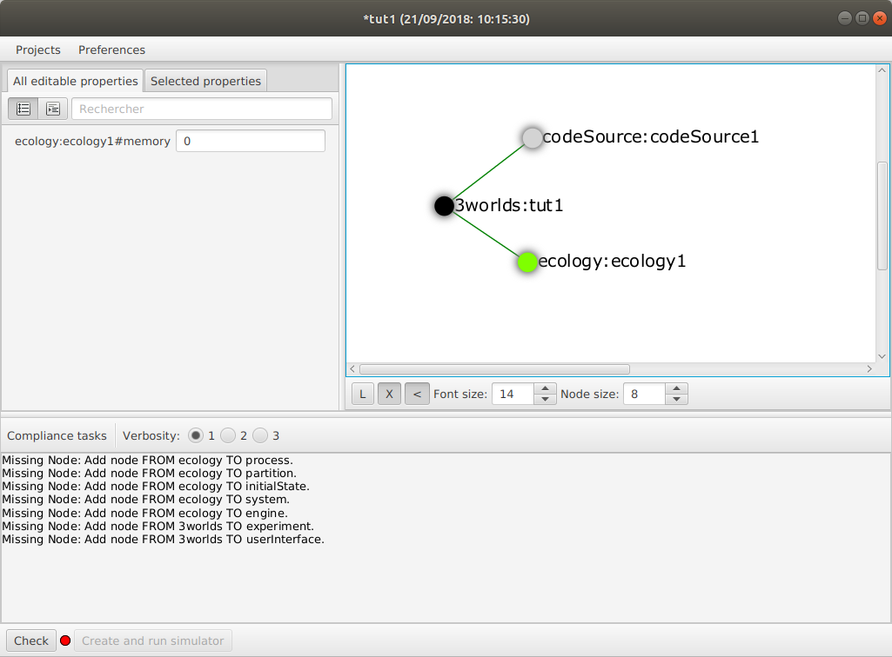
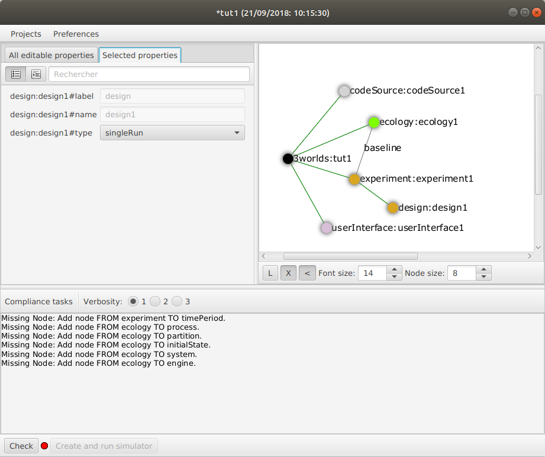
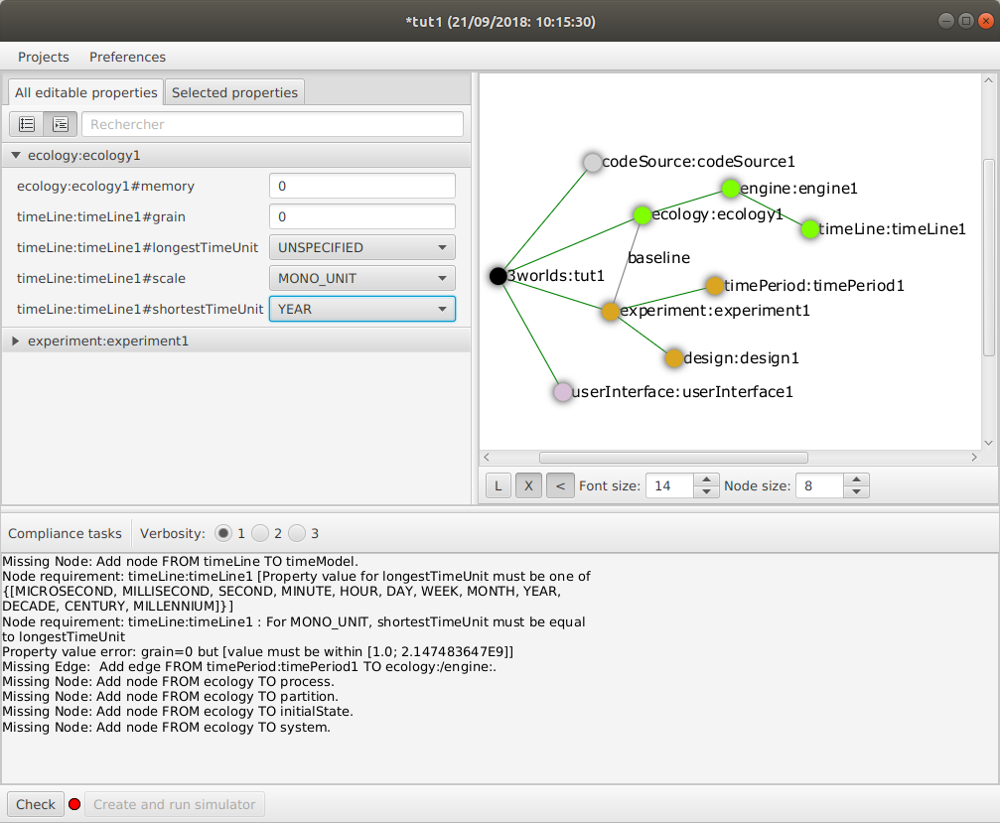
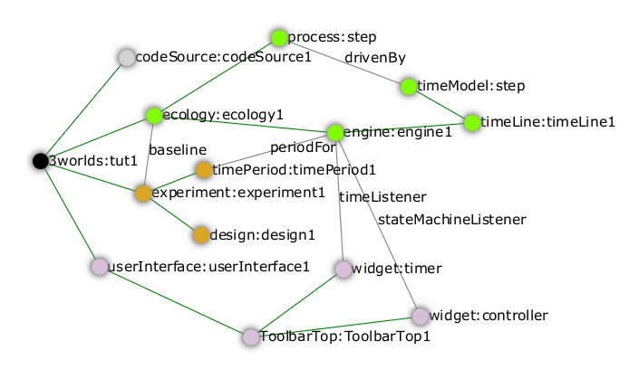
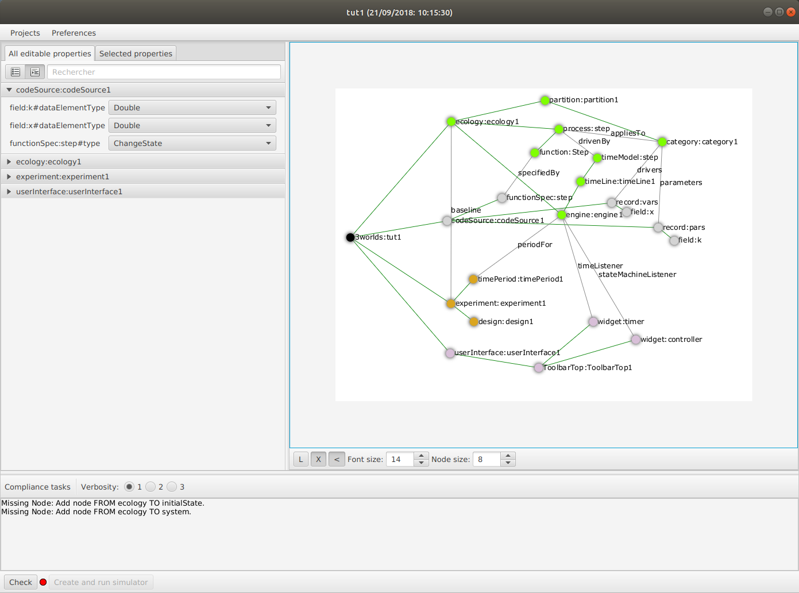
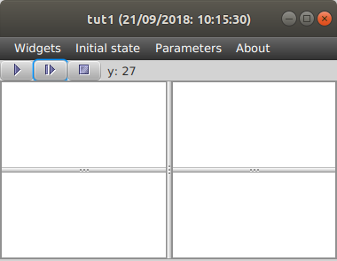
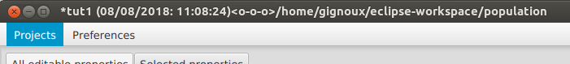

1. Purpose and motivation
Why another simulation environment?
Ecosystems, as first proposed by Arthur Tansley in 1935, have both physical and biological aspects. They comprise not only energy and chemical stocks and flows but also living things that are born, reproduce and die, exhibiting particular behaviours over the course of their existence. They are made from and return to the physical world (dust to dust, ashes to ashes) and at one and the same time, are part of it – compete with and facilitate the existence of other living things. To this day, reconciling these two aspects remains a key problem in ecosystem studies.
In addition to this physical and biological duality, ecosystems are multi-scale and the ability to modify scale, in not only the ordinary sense of a change in extent and resolution but also by increasing or decreasing detail through adding or removing sub-systems at different scales, is a key motivation behind this project. At what level of detail should we model our system to capture its important behaviour? How does changing scale (in the broadest sense) effect model outcomes?
Models built using 3Worlds conform to an archetype of what we believe constitutes an ecosystem – a recursive and multi-scale system of interacting entities. They are recursive because (eco)systems can be made of (eco)systems. They are multi-scale because the processes we may wish to include in our model system may operate at different rates. The great benefit of this is that while we believe it’s possible to construct any type of model within this archetype, imposing specification constraints greatly assists in model comparison: why should two models, ostensibly constructed for the same purpose, differ in their outputs? How does a change in temporal or spatial scale affect projections? How does adding or removing sub-systems change model projections?
2. Getting started - download and installation
2.1. Basics - what you must know before starting
3Worlds is an application designed to develop and launch simulations of ecosystems. It is highly versatile and can simulate any kind of ecosystem using any kind of mathematical logic.
The application and use of 3Worlds to a particular ecosystem for a particular study case is called a model — or, more precisely a simulation model. The model must first be specified and developed (this involves writing some code in the java programming language) before it can be executed for a particular case study. This execution is called a simulation experiment.
3Worlds comprises two main applications:
-
ModelMaker, to configure a model; -
ModelRunner, to run the model.
Creating a model involves creating a configuration with ModelMaker and developing some associated java code to specify details particular to your model.
To do this, you must use the eclipse programming software (freeware). Later versions of 3Worlds may support other packages, but at the time of writing, 3Worlds will only work with eclipse.
ModelMaker will generate java code for data structures specific to a model (based on the configuration file you have developed) and template java code for each process you have defined. These process templates are where you enter programming code to implement your model. You only need to write code for your processes and for model initialisation. All else is managed by 3Worlds.
3Worlds is written in java, which makes it OS-independent. It can be run on MacOS, Linux or Windows computers.
2.2. Prerequisites
You must have the following software installed on your computer prior to install 3Worlds:
2.3. Running ModelMaker standalone
This assumes you have downloaded 3w.zip.
-
Unzip
3w.zipin your user home directory (important), keeping the internal directory tree. This will extract a filemodelMaker.jarand a.3wdirectory containing more jar files. -
Double-click on
modelMaker.jar. This should launch the ModelMaker application. -
If this does not work, open a terminal and type
java -jar modelMaker.jar. This should launch the ModelMaker application.
The last is the preferred method as any errors that may arise will appear in the terminal window.
Note: to develop your model-specific code, you will need to setup a java development environment as shown in section Setting up Java.
2.4. Setting up a java development environment for the user code
2.4.1. Setting up an eclipse IDE for 3Worlds
This assumes you have downloaded UserCodeRunner.java, threeWorlds.jar and tw-dep.jar.
-
If not yet done, install eclipse (don’t forget e(fx)clipse!)
-
Create at workspace (= a working directory for eclipse - eclipse will ask for it when launched). e.g., <my_workspace>
-
Within eclipse, create a project:
-
Select menu
File → New → Java project; this opens a dialog box -
In the dialog box, type a project name (e.g. <my_project>)
-
Click the
Finishbutton
-
-
Import
UserCodeRunner.javain the project:-
Select menu
File → Import; this opens a dialog box -
In the dialog box, select
general > File System -
Click the
nextbutton -
Click on the
Browsebutton to select the directory whereUserCodeRunner.javais located -
Select the proper file in the list
-
Select
/srcas the destination location in the project -
Click the
Finishbutton
UserCodeRunner.javashould now appear as the unique member of adefaultpackage, with a compile error message attached to it. -
-
Update libraries required by the project:
-
Select menu
Project → Properties; this opens a dialog box -
In the dialog box, select
Java Build Path -
Select the
Librariestab -
Click on the
Add external JARs…button; this open a file selection dialog box -
In the file selection dialog box, browse and select
threeWorlds.jar -
Repeat the two previous operations for
tw-dep.jar -
Click the
Apply and Closebutton
UserCodeRunner.javashould now have no compile errors. -
2.4.2. Running ModelMaker from eclipse
ModelMaker can be run as a standalone application, or from eclipse since it is included in the threeWorlds.jar library required to developed the user code.
-
In the
package explorerwindow, expand theReferenced librariesentry -
Right-click on the
threeWorlds.jarentry, selectRun as → Java Application. This opens a dialog box -
In the dialog box, type
ModelMakerfxand clickOK -
If a dialog box appears warning for errors, click
Proceed. This launches the ModelMaker application
2.4.3. Linking user code with model configuration
This requires the following actions:
-
In ModelMaker,
-
create or open a 3Worlds project (
Projectsentry of the main menu) -
select
Preferences → Java Project → Connect…. This opens a dialog box with a file selector -
select the root directory of the eclipse project as created above (e.g. <my_workspace>/<my_project>)
This operation tells
ModelMakerto generate its code into the user java project. When you want to edit your code in eclipse, you must first refresh the eclipse project: -
-
In eclipse,
-
select the project name at the very top of the
package explorerwindow -
right-click on it and select
Refresh -
or, alternatively: press the F5 key
-
2.4.4. Debugging and testing user code
The user code, first generated by ModelMaker and further edited by the user, can be run using UserCodeRunner.java.
It requires two command line arguments (we assume that you know how to setup and run a Run Configuration in eclipse):
-
the name of the directory of the 3Worlds project as created by
ModelMaker(e.g. project_test_model_9_D89EF3043496-000001636846F7AF-0000). This project directory is located under the.3wdirectory automatically created byModelMakeras its working directory -
the name of the model configuration file in this directory (e.g. test_model_9.dsl)
With this, the user code should be executed as a test simulation by UserCodeRunner.
Further edits and modifications of the configuration can be made in ModelMaker, but do not forget to keep the eclipse project content synchronized with the ModelMaker project by refreshing the eclipse project as often as necessary.
3. ModelMaker reference: creating and editing a model
3.1. General concepts: structure of a 3Worlds configuration
3.1.1. A tree structure…
The configuration of a 3Worlds simulation experiment is organised as a tree (cf. figure Tree structure of a simulation experiment configuration in 3Worlds). Each tree node specifies a subset of the parameters of the whole configuration. Each node has child nodes linked through a tree edge, so that large pieces of configuration can be broken down into the relevant details. At each level of this hierarchy, properties can be attached to nodes.
Nodes have a label and a name that are displayed in the ModelMaker interface as label:name:
-
The label specifies what role this particular node plays in the whole configuration. For example, the node labelled
experimentis used to configure a simulation experiment. -
The name is used to differentiate nodes that have the same label. It is optional for certain types of nodes. For example, a configuration could have two simulation experiments, one named
baseLineand one namedmy favourite experiment.
The root node of a configuration is always labelled 3worlds.
The configuration tree is stored in a file in a specially designed text format, ending with the extension .dsl or .twg. Such files are produced by ModelMaker and can then be exchanged and imported into ModelMaker via the Projects>Import… menu entry. Their format is human-readable, but they must never be edited with another software than ModelMaker - the risk is to corrupt all your configuration and be unable to run it (or even edit it with ModelMaker again).
Each node in the configuration has a particular meaning for ModelRunner: the configuration must comply with certain rules and constraints, the first one being the particular set of nodes that have been designed and appear on figure Tree structure of a simulation experiment configuration in 3Worlds. The detailed meaning of all nodes and their properties is described in section 3Worlds reference.
3.1.2. …with cross-links
Actually, the 3Worlds configuration is not stritcly hierarchical: according to their role in ModelRunner, some configuration nodes need to gather information from other parts of the configuration tree. This is done by allowing for some cross-reference edges to be defined, that overlay with the strict hierarchical structure of the tree. As a result fo these cross links, the whole configuration is a graph rather than a tree.
Edges representing cross links have a label, name, and may have properties just as nodes do. The detailed meaning of all cross-reference edges and their properties is described in section [#].
3.1.3. What ModelMaker does for you
ModelMaker knows the details of the configuration constraints. It facilitates the design of a configuration by only letting you add the nodes, edges and properties that will produce a valid, runnable configuration file. During the configuration building process, it constantly checks the validity of the graph and reports any errors or missing parts in its log panel. ModelMaker is far more than a nice visual editor producing a graph: a configuration graph produced with ModelMaker is guaranteed to run with ModelRunner because of all these internal consistency and validity checks.
3.2. Using ModelMaker: software interface and functioning
TO DO: step-by-step description of using the user interface. With screenshots.
3.3. Configuration options: reference
In this section,
-
node and edge labels are indicated in
bold -
text in triangular brackets (
<>) mean a user-defined value is expected; the text usually specifies what kind of value is expected (e.g.<name>for a name,<int>for an integer number, etc.). If the text is required, it will be underlined, otherwise it is optional -
a multiplicity in curly braces {} tells how many times the item may appear in a configuration:
{1} exactly one item is required
{0..1} the item is optional, i.e. one or zero is required
{1..*} one to many items are required
{0..*} any number of items is possible
-
levels in the tree hierarchy are indicated by slashes
/.
3.3.1. The 3Worlds node
/3worlds:<name> {1}
This node is the root of any 3Worlds configuration file. The name will appear in ModelMaker's main window title, in the project directory name and in the configuration graph file. The name is requested and set when creating a new project (Projects>New menu entry in ModelMaker).
3.3.2. The ecology node
/3worlds/ecology:<name> {1..*}
This node and its sub-tree contains all the ecological concepts used to define a simulation model: what entities are modelled, what biological processes apply to them, at what time step they should run. The name is used to differentiate models as a simulation experiment may involve more than one model.
The partition/category/relation concepts: specification of groups of entities
3Worlds uses these concepts to specify the ecological entities manipulated during a simulations.
Category
…/partition/category:<name> {1..*}
A category is simply a name attached to a set of objects sharing common properties. Practically, these common properties are state variables, parameters and dynamic behaviours (or processes). Categories and partitions constitute a user-defined classification of system component types relevant for a particular model.
To make this classification useful, we attach parameters and state variables to categories. State variables are variables (numbers, text, logical values) that characterize the state of a system component at an instant in time (e.g. biomass, age, sex, social status…). They will vary during a simulation. Parameters do not vary during a simulation; they are characteristic of a set of system components sharing them — conceptually, a 'species' (e.g. average individual growth rate, mortality rate…).
Practically, this means that any instance of a system component of a given category will implement the state variables of this category and share parameters with other system components of the same 'species'.
The exact data structures for state variables and parameters are specified under the codeSource node and linked to the category through the following:
Cross-links for category:
parameters → record:<name>{0..1}-
This link tells which record data structure (in codeSource) is used to store parameters.
drivers → record:<name>{0..1}decorators → record:<name>{0..1}-
Similarly, these links tell which data structure in codeSource is used to store state variables. State variables are further classified into drivers, i.e. variables that drive the dynamics of the system; and decorators, i.e. secondary state variables which values are computed from those of the drivers, only reflecting the dynamics of the drivers.
A category may be defined with no parameters, drivers or decorators, but it would be pretty useless to have neither of them.
Partition
/3worlds/ecology/partition:<name> {1..*}
Some categories must be exclusive of each other: for example, an ecological entity is either a plant or an animal, but can’t be both. For this reason, exclusive categories are grouped into partitions. A partition is a set of mutually exclusive categories. A partition may apply only to categories of a particular type (defined in another, higher level, partition). Hence categories can be nested:
…/category/partition:<name> {0..*}
Relation
/3worlds/ecology/relation:<name> {0..*}
A relation is just a name representing a meaningful link between two categories. It is specified by giving it a name and cross-linking it to the relevant categories with fromCategory or toCategory cross-links. Note that a relation can link more than one 'from' categories to more than one 'to' categories if required. Relations are used to implement specific processes acting on ecological entities (for example, a predation process).
Cross-links for relation:
fromCategory → category:<name>{1..*}-
This link tells which categories are at the start of the relation.
toCategory → category:<name>{1..*}-
This link tells which categories are at the end of the relation
Properties for relation:
lifespan
|
This property specifies if this type of relation will stay attached to its |
Example: a category / partition tree
On this diagram (generated with ModelMaker), hierarchical links are in green and cross-links are in black.
In this example, a plant can be a C3 tree but cannot be simultaneously a grass and a liana. Similarly, an animal cannot be both herbivore and carnivore. The predation relation links an animal of any kind (the prey) to a carnivore (its predator).
The specification of ecological entities: system components
System component
/3worlds/ecology/system:<name> {1..*}
3Worlds simulates a system made of system components. These are the things which are instantiated at run time, hold state variables, and are dynamically changed over the time course of a simulation. When setting up a simulation, one must attach categories to system components. The rules prevailing to build up partitions and categories mean that a system can belong to a number of non-exclusive categories, as long as the exclusion and nesting rules are respected. For example, we could define a system as belonging to the plant and tree categories, but not to the animal and tree categories.
Cross-links for system:
memberOf → category:<name>{1..*}-
This link tells to which categories a system component type belongs. The categories must not belong to the same partition. If there are nested categories, membership is inherited (e.g. in the previous example, belonging to the C3 category automatically implies the system component is also a plant).
initialiser → initialiser:<name>{0..1}-
Use this optional link to specify a function to initialise state variables of a
systemComponentat the beginning of a simulation.
Properties for system:
lifespan
|
This property specifies if this type of system component will stay forever, or may get created and deleted during a simulation |
Life cycle
/3worlds/ecology/lifeCycle:<name> {0..*}
As system components are designed to represent — among other things — individual organisms, they are able to create other system components ar runtime, or to transform themselves into system component of another category set. These abilities are captured in the description of a lifeCycle, which describes the possible creations and transitions of system components of a given category set into another.
Since systemComponents belong to categories, different types of system components represented by different state variables, subject to different ecological processes, can coexist in a simulation. It may occur in a particular model that one wishes to represent a transition between, e.g. development stages: think for example of a caterpillar turning into a butterfly. There are chances that you don’t want to describe the caterpillar with the same variables and behaviours as the adult butterfly. The operation of transforming a system component from a set of categories to another is called recruitment. Computationally, it means that the simulator must keep track of the system component’s identity and age in the first stage and carry these properties on to the new system component of the second stage, and call an appropriate method to transform state variables of the first stage into the new one.
Reproduction is the second process by which system components of a given category set may produce other system components belonging to possibly different categories.
A specification of a life cycle is made by specifying recruit and produce nodes to match these two behaviours.
Recruitment
/3worlds/ecology/lifeCycle/recruit:<name> {0..*}
This node specifies that two systemComponent types are linked by a recruitment process.
Cross-links for recruit:
from → system:<name>{1}-
This link tells which system component type is getting changed by the recruitment.
to → system:<name>{1}-
This link tells which system component type is the result of the recruitment.
process → process:<name>{1}-
This link tells which ecological process is used to compute the recruitment.
Reproduction
/3worlds/ecology/lifeCycle/produce:<name> {0..*}
This node specifies that two systemComponent types are linked by a reproduction process.
Cross-links for produce:
from → system:<name>{1}-
This link tells which system component type is producing new system components.
to → system:<name>{1}-
This link tells which system component type is the result of the reproduction.
process → process:<name>{1}-
This link tells which ecological process is used to compute the production of new system components.
The setup of an initial state for a simulation
Initial state
/3worlds/ecology/initialState:<name> {0..1}
To run a simulation, an initial population of systemComponents must be provided. Nodes under the initialState node are used to input data to create such an initial state.
| Please note that 3Worlds allows for five different ways of initialising a simulation. These methods are explained in detail in section feeding the system with data). |
Species
/3worlds/ecology/community/species:<name> {0..*}
This node specifies an instance of a species, characterized by a life cycle. Different instances of this life cycle may be specified by means of different names.
Cross-links for species:
speciesType → lifeCycle:<name>{0..1}-
This link tells which life cycle should be used for this species. It is not required if the species only has one stage (see below).
loadFrom → dataSource:<name>{0..1}-
This link tells which data source the species data should be read from. It is required if no
nameis given to the species. If nonameis given, the file may contain data for more than one species and a species instance will be setup for every species entry found in the data file. cf. section dataIO.
if no name is given, the data must be read from a file, i.e. there must be a loadFrom cross-link.
|
Developmental stages
/3worlds/ecology/community/species/stage:<name> {0..*}
This node specifies an instance of a stage, characterized by a system type. Different instances of this system type may be specified by means of different names.
Cross-links for stage:
systemType → system:<name>{1}-
This link tells which system component type should be used for system components belonging to this stage.
loadFrom → dataSource:<name>{0..1}-
This link tells which data source the stage data should be read from. It is required if no
nameis given to the stage. If nonameis given, the file may contain data for more than one stage and a stage instance will be setup for every stage entry found in the data file. cf. section dataIO.
if no name is given, the data must be read from a file, i.e. there must be a loadFrom cross-link.
|
Individuals present at simulation start
/3worlds/ecology/community/species/stage/individual:<name> {0..*}
This node specifies an instance of a system component to be created at the beginning of a simulation.
Cross-links for individual:
loadFrom → dataSource:<name>{0..1}-
This link tells which data source the system component data should be read from. It is required if no
nameis given to the individual. If nonameis given, the file may contain data for more than one individual and a system component instance will be setup for every individual entry found in the data file. cf. section dataIO.
if no name is given, the data must be read from a file, i.e. there must be a loadFrom cross-link.
|
Format of data files are described in section dataIO.
It is possible to directly input data in ModelMaker (recommended for small amounts of data only) by using a load node as a child node of either species, stage or individual:
Using load to directly input data from ModelMaker
/3worlds/ecology/community/…/load
Properties for load:
Any field or leaf table defined in the codeSource section can be instantiated with a properly typed value here.
The representation of time
Simulation is about mimicking the dynamics of a real system. Here, dynamics is specifying by attaching particular behaviours (called processes) to either categories or relations.
Simulator
/3worlds/ecology/engine:<name> {1}
This node specifies the type of simulator to use.
| Currently, there is only one type of simulator available, so it is set by default without user intervention. This may change in the future, so that user choice may be needed here. |
Time line
/3worlds/ecology/engine/timeLine:<name> {1}
Every simulation experiment has a reference time line. Since different ecological processes may run according to different time models, they must refer to a common time frame for interaction to be possible among them. A timeLine defines what kind of time scale and time units can be used in this experiment, and more importantly what is the time grain, i.e. the duration below which events are considered simultaneous. Internally, the ModelRunner uses integers to represent time, with 1 = one time grain.
Properties for timeLine:
scale
|
This property specifies the type of time scale to use. The usual time units pose many problems, because years, months, weeks and days are not integer multiples of each other. The option is either to use a real calendar time scale – but this is not needed in most simulation studies – or to use approximations which enable year, months, weeks and days to be integer multiples of each other (e.g. an easy approximation is to assume 30-day months, but this means years must be only 360-day long). This property proposes a set of such simplified, compatible sets of units, denoted as time scales. |
shortestTimeUnit
|
The shortest time unit used in this model. Note that the time scale constraints the time units compatible with each other for this property. |
longestTimeUnit
|
The longest time unit used in this model. cf. |
grain
|
The finest time interval used in this model: this value is the number of time intervals within a shortest time unit (e.g. if |
Time models
/3worlds/ecology/engine/timeLine/timeModel:<name> {1..*}
Ecological processes may be run following different time models. A time model is a particular way of representing time in the simulator. Time models may differ in parameters, like e.g. two time models using different time steps; but they can also be radically different in their logic: e.g. clock-like ticking vs. event-driven simulation.
Properties for timeModel:
timeUnit
|
the base time unit used by this model. cf. |
nTimeUnits
|
the number of base time units in the time unit of this model (e.g., a model may have a 2 year time unit) |
runAtTimeZero
|
whether model state must be computed at time origin, i.e. before simulation start |
class
|
the type of |
Additional properties when class = ClockTimeModel
dt
|
The constant time increment used in this
|
Additional sub-tree when class = EventTimeModel
/3worlds/ecology/engine/timeLine/timeModel/eventQueue:<name> {1}
An EventTimeModel maintains a queue of time events that gets populated by ecological processes. Time events are stored in this queue based on their date and activated by the simulator following time order.
Cross-links for eventQueue
populatedBy → function:<name>{1..*}-
These links indicate which ecological processes will populate the event queue with time events.
Simulation stopping condition
/3worlds/ecology/stoppingCondition:<name> {0..*}
A simulation may be run indefinitely (interactively), but in big simulation experiment it is useful to automatically stop the simulations according to some criterion. Besides the simplest stopping condition, reaching a maximal time value, 3Worlds provides many other possibilities to stop a simulation (e.g. based on a population size, on a variable passing a threshold value, etc.).
Although not directly attached to the simulation engine (they are managed by the simulation experiment node), stopping conditions sometimes have to know about the system modelled, for example when they must read a variable value in the simulated system. This is why they are defined here.
When no stopping condition is defined, the simulation will run indefinitely.
Properties for stoppingCondition
class
|
The type of stopping condition to use |
Additional properties when class = SimpleStoppingCondition
endTime
|
The time at which the simulation will stop, in time line |
Additional cross-links when class = ValueStoppingCondition, InRangeStoppingCondition, OutRangeStoppingCondition
stopSystem → system:<name>{1}-
The system component in which the criterion variable will be checked to stop the simulation. [TODO: check this - seems flawed to me]
Additional properties when class = ValueStoppingCondition, InRangeStoppingCondition, OutRangeStoppingCondition
stopVariable
|
The name of the variable which value will be checked. |
Additional properties when class = ValueStoppingCondition
stopValue
|
The value of |
Additional properties when class = InRangeStoppingCondition, OutRangeStoppingCondition
upper
|
The upper value of the |
lower
|
The lower value of the |
Additional cross-links when class = MultipleOrStoppingCondition, MultipleAndStoppingCondition
condition → stoppingCondition:<name>{1}-
These links point to the stopping conditions that will be used as elementary stopping conditions by the multiple and/or stopping condition.
Ecological processes
Process
/3worlds/ecology/process:<name> {1..*}
Processes are used in 3Worlds to compute change in system components. Each process acts on system components of a particular category set (cf. Category, System Component) and is scheduled by a particular time model (cf. time representation). Processes contain user-defined code that represents ecological processes. This gives 3Worlds its versatility: one can mix in a single models completely different ecological entities (system components of different category sets), implement any ecological process depending on user needs, and put them to work on different time scales (time models).
Cross-links for process
A process can act on a single system component at a time (called the focal system component), or on a pair of components linked by a relation (called the focal and the other system components). This is specified using the appliesTo cross-link (one at least must be present):
appliesTo → category:<name>{0..*}-
These links indicate the category set of the system components that will be acted on by the process.
appliesTo → relation:<name>{0..1}-
This link indicates to which relation between system component the process applies.
dependsOn → process:<name>{0..*}-
This link tells that the process must be activated after the processes targeted by the links. Use this link to organize computations when there are dependencies between them.
timeModel → timeModel:<name>{1}-
This link tells which
timeModelshall be used to activate the process.
Function
/3worlds/ecology/process/function:<name> {1..*}
User-defined code for computing ecological processes is located in functions, which constitute the modifiable part of processes. There are different types of predefined functions, which differ by the way they act on system components (cf. << >>).
Cross-links for function
spec → functionSpec:<name>{0..1}-
This link points to a function code specification provided in
codeSource. Based on this specification,ModelMakerwill generate the appropriate java source file for insertion of user-defined code.
Properties for function
className
|
The name of an existing java class containing the user-defined function code. [TODO: check validity of this] |
Either the spec cross-link or the className property must be provided, but not both.
Function consequences
/3worlds/ecology/process/function/consequence:<name> {0..*}
Some functions may imply consequences: for example, a decision to delete another system component may be followed by a change in state based on the deleting component’s state at the time it is deleted. Such functions that are only activated when certain events take place are called consequences and may be specified by a child node to a function.
Data tracking
/3worlds/ecology/process/dataTracker:<name> {0..1}
Simulations are useless if data cannot be efficiently output. The data tracker is a particular function able to send data to an output (either the 3Worlds graphical user interface or some kind of database). Since it is associated to a process, it will follow a timeModel and apply to a particular set of system components. A data tracker may be attached to a process that already has a function defined, or not.
| There is a potential runtime saving in attaching data trackers and functions together in a process, since their invocation will be performed in a single loop on system components. |
The data tracker mimicks real-world data loggers: a channel links a 'sensor' (the internal 3Worlds variable) to an output (a chart on the user interface, a file or a database table). Channels can be attached to a single system component or to a set of them, using various statistical aggregation methods. Many properties are defined to enable to fine-tune the production of output.
Properties for dataTracker:
track
|
This property specifies the list of variables that should be tracked by this datatracker |
groupBy
|
This property specifies how many tracking channels should be created for a tracked variable, depending on groups their containing system components belong to. |
select
|
This property specifies how to pick system components for data tracking within a group. The data will be either (1) selected for one particular system component within each group, or (2) taken from that group’s own data, if any (e.g. species population size), or (3) aggregated using some statistical method. For (1), the default behaviour is that once a system component is selected, it will be tracked until its deletion by the simulator. In all cases, remember that the maximal number of data tracking channels is set by the |
viewOthers
|
This property specifies if an extra tracking channel must be created for system components that are not part of a selection. If set to |
stageList
|
This property contains the list of stage names to be tracked. |
speciesList
|
This property contains the list of species names to be tracked. |
individualList
|
This property contains the list of individual system component to be tracked |
statistics
|
This property lists transformations of the raw data to compute when a group contains more than one system component |
tableStatistics
|
This property lists transformations of the raw data to compute in case of a table variable. The grouping is determined by the index specification in the track variable list. |
Initial computations
/3worlds/ecology/initialiser:<name> {0..*}
In some models, computations on parameters are required before the model starts to run. The initialiser node fullfils this requirement by allowing users to write code to perform these computations.
Cross-links for initialiser
spec → initialiserSpec:<name>{0..1}-
This link points to an initialiser code specification provided in
codeSource. Based on this specification,ModelMakerwill generate the appropriate java source file for insertion of user-defined code.
Properties for initialiser
class
|
The name of an existing java class containing the user-defined initialiser code. [TODO: check validity of this] |
Either the spec cross-link or the class property must be provided, but not both.
3.3.3. The codeSource node
/3worlds/codeSource {1..*}
This node and its sub-tree contains specifications for automatic code generation needed to implement a particular model. Most of its nodes have cross-references to nodes of the ecology sub-tree. The multiplicity allows users to organise their code specifications into meaningful units
Specifying data structures
The versatility of 3Worlds resides in the possibility to generate any relevant data structure: based on simple specifications described here, ModelMaker will generate java classes implementing the data structures that will be interfaced with user-written code describing ecological processes.
Under the ecology node, we have seen that ecological entities could be grouped into categories organized in partitions of exclusive categories, and that hierarchies of partitions within categories could be designed.
3Worlds proposes two kinds of data structures: records and tables, that can be organized hierarchically.
| The top-level data structure must be a record |
Record
/3worlds/codeSource/record:<name> {0..*}
…/table/record:<name> {0..1}
A record is a set of (name,value) pairs where the values are accessed by their name. Values may be of different types (e.g. numbers, character strings, tables…).
Records may contain fields or tables or both (see below), but no records.
Table
/3worlds/codeSource/record/table:<name> {0..*}
A table is a set of values all of the same type, accessible by an index. 3Worlds tables can be multidimensional, i.e. can have many indexes. Tables may contain elements of the same types as fields, or records (see below), but no tables.
Cross-links for table:
dim → dimensioner:<name>{1..*}-
This link tells how many entries a table has in this dimension. A table must have at least one dimensioner.
Properties for table:
dataElementType
|
The data type of the elements of the table |
The dataElementType property can be ommited if a record sub-node is provided.
|
Field
…/record/field:<name> {0..*}
A field specifies a single value with a name to access it.
Properties for field:
dataElementType
|
The data type of the field. |
Dimensioner
/3worlds/codeSource/dimensioner:<name> {0..*}
A dimensioner is a constant integer number used to set the size of a table data structure.
Properties for dimensioner:
dim
|
The number of entries of the table in this dimension (integer in range [1;2147483647]). |
Example: specifying nested data structures
On this diagram (generated with ModelMaker), hierarchical links are in green and cross-links are in black.
The data structure tree of this figure, once linked to a category tree and to system components, will generate the following code:
TODO: put generated code here
Specifying user-defined code
The versatility of 3Worlds resides in the possibility to implement any relevant ecological process to describe ecosystem dynamics. System components that constitute the simulated system have their state variables modified during the course of a simulation by ecological processes. These processes perform different kinds of actions on system components, but all of them can (and actually should) be customized to implement the particularities of any model.
Whereas in the ecology node we specified the conceptual links between categories, system components and processes, here we can specify the technical part of process implementation. Based on these specifications, ModelMaker will generate java source files for template function classes into a user-specified directory (preferably a java project: cf. java project for user code). Users can then edit these files to their needs, and they will be compiled and linked to the simulator by ModelMaker.
Function
/3worlds/codeSource/functionSpec:<name> {0..*}
The functionSpec node is used to selecct a particular type of function to attach to a process. Functions differ by the way they act on system components:
-
some only modify the state variables of a system component
-
others make decisions on system components:
-
delete a system component
-
create new system components
-
transform into another system component type
-
establish or maintain a relation to another system component
-
This is specified by means of the type property.
Properties for functionSpec:
type
|
This property specifies which kind of biological function will be implemented within the linked |
The code template generated by ModelMaker will differ based on this property.
TODO explain in detail the difference between the code templates
Initialiser
/3worlds/codeSource/initialiserSpec:<name> {0..*}
This node specifies a particular type of function that is only called once, at the beginning of a simulation, to set initial values or perform initial computation on a model’s parameters. It is the only place where parameters can be modified programmatically.
3.3.4. The dataIO node
/3worlds/dataIO {1..*}
This node and its sub-tree contains links to external data sources (usually files) required by a simulation experiment, either for data input or output. Most of its nodes have cross-references to nodes of the ecology sub-tree. The multiplicity allows users to organise their data sets into meaningful units.
Data sources
When an important amount of data must be imported at the beginning of a simulation, the direct input of data through the load node becomes impractical. The loadFrom cross-links to dataSource nodes enables one to import data from external files.
Currently, supported file formats are plain text .csv, and OpenOffice spreadsheet .ods. However, it is possible to develop file importers for other formats. Those interested by such developments should contact the 3Worlds developers.
|
/3worlds/dataIO/dataSource:<name> {0..*}
This node specifies a data source, i.e. a file, a set of files or a database connection.
| database connections and sets of files as data sources are not yet implemented. |
Properties for dataSource
file
|
The name of the file where the data is to be read. |
class
|
The type of file loader to use to read |
Additional properties when class = CsvFileLoader
separator
|
the field separator used for this |
Additional properties when class = OdfFileLoader
sheet
|
the name of the spreadsheet to load from this |
Additional properties when class = CsvFileLoader, OdfFileLoader
.csv and .ods file formats both assume the data come in 2 dimensional tables with cross-references between the tables. Table columns must match parameter and driver field or table names. Table rows must match species, stage or system component instances.
The following rules must be respected when preparing the data files:
-
The data must not contain any missing value or structural empty cells.
-
Empty lines are permitted (they are skipped).
-
Text data must not be quoted.
-
The first data line of any file or spreadsheet must contain column headers. They must match field names as defined in the 3Worlds specification file produced by
ModelMaker.
Since we do not allow for empty cells, complex data structures may have to be loaded from different files/spreasheets. In particular, a different file or spreadsheet per set of table dimensions should be used. The match between different files/spreadsheets is based on some data columns containing particular identifiers, specified in the following additional properties (all optional [NOTE: this may be wrong]).
idSpecies
|
header of the column containing the species names. If only this property is set, each row of the file/spreadsheet will be used to generate a different species parameter set. Other column headers must match species parameter field names. |
idStage
|
header of the column containing the stage names. If this property is set, then |
idComponent
|
header of the column containing the system component ids. If this property is set, then |
idRelation
|
header of the column containing the relation names [NOTE: not yet implemented] |
idVariable
|
header of the column containing the driver names [NOTE: I dont remember what I planned to use this for!] |
All other columns are assumed to be read as such: they play no specific role in the file scanning process.
Additional sub-tree when class = CsvFileLoader, OdfFileLoader
/3worlds/dataIO/dataSource/read:<name> {0..*}
This node specifies that a particular parameter/driver must be read from the file/spreadsheet. The name property of the read node must match the parameter/driver name to read. By default, when no read node is present, all parameters/drivers found in the file/spreadsheet will be read. Use read nodes to restrict the number of columns to read in a data source.
/3worlds/dataIO/dataSource/dim:<name> {0..*}
This node is used when reading data for 3Worlds table data structures. The node name must be an integer matching the dimension declared in a table under the codeSource node. It must then have the following property:
col
|
header of the column containing the index values for this dimension. |
When dim nodes are present, the index values contained in the dimension columns specified in col are used to fill a table within the same 3Worlds data structure.
Example of a dataSource specification
This .csv file:
stage |
dim_1 |
fecundity |
mortality |
dispersal |
site |
population |
0 |
0.1 |
0.2 |
0.1 |
site |
population |
1 |
0.1 |
0.5 |
0.1 |
site |
population |
2 |
0.2 |
0.5 |
0.2 |
site |
population |
3 |
0.5 |
0.01 |
0.5 |
site |
population |
4 |
2 |
0.8 |
1 |
site |
population |
5 |
3.5 |
0.56 |
0.5 |
site |
population |
6 |
14.0 |
0.02 |
0.01 |
site |
population |
7 |
2.5 |
0.001 |
0.5 |
site |
population |
8 |
6.2 |
0.03 |
0.2 |
site |
population |
9 |
3 |
0.1 |
0.3 |
site |
with the following specifications:
will result in the instantiation of a single parameter set with species='site', stage='population', and data contained in an 10-cell array of records with 3 fields, fecundity, mortality and dispersal.
How?
-
property
idSpeciesstates that the column labelled 'site' is the species identifier (last column of the csv file). -
property
idStagestates that the column labelled 'stage' is the stage identifier (first column of the csv file). -
since there is no
idComponentproperty, it means this file contains stage parameter data. -
node
dimwithname=1 specifies that the data to be read go into a table -
property
colstates that the column labelleddim_1contains the indices for dimension 1 of the table. -
the
readnodes specify that the columns labelled 'fecundity', 'dispersal' and 'mortality' are to be read. Notice that these nodes were not required, since the default behaviour would have caused all these columns to be read anyway. -
finally, the 10 different lines with different table indices (CAUTION: the indices start at 0 for 3Worlds table data structures) will all go into the same parameter set since only one (species name, stage name) pair is given here. Hence only one stage parameter set is instantiated.
Data sinks
| this part of the code is under refactoring. |
/3worlds/dataIO/dataSink:<name> {0..*}
Properties for dataSink
class
|
A data exporter class. |
Cross-links for dataSink:
dataListener → dataTracker:<name>{1}-
This link tells which
dataTrackeris used to aggregate the data for output.
3.3.5. The experiment node
| This part is still under construction |
/3worlds/experiment:<name> {1..*}
This node and its sub-tree describe the experimental design to run using a given model and external data sets. Typically, il will tell ModelRunner how many simulations should be run, possibly varying some parameters of the model according to some plan. The name is used to differentiate simulation experiments in a meaningful way. TODO[It will appear in output directory names ?].
The experiment node must have a cross-reference edge labelled baseLine {1} to an ecology node. The model configuration contained in this ecology sub-tree will be used as the reference, "base line" simulation in the experiment - similar to a control treatment in a real-world experiment.
The default, simplest, simulation experiment is just to run a single simulation of the baseLine model.
Cross-links for experiment:
baseLine → ecology:<name>{1}-
This link points to a model setup that will be used as a base line simulation. A base line simulation is the equivalent of a control in a real experiment, i.e. a reference case that serves as a basis to which other treatments are compared.
Simulation duration
/3worlds/experiment/timePeriod {1..*}
The duration of a particular simulation is specified using a timePeriod node.
Properties for timePeriod
start
|
The starting time of a simulation in |
end
|
The ending time of a simulation in |
| Both properties are optional. If none is set, the simulation will start at time 0 and run indefinitely. |
Cross-links for timePeriod:
timeRunner → engine:<name>{1}-
This link tells which simulator engine is running the time and is going to need the start and end time information.
stopOn → stoppingCondition:<name>{0..1}-
This link tells how to stop the simulation in case no
endproperty is given.
The stopping condition has the priority over the end property. TODO: check this
|
Experimental design
/3worlds/experiment/design:<name> {1}
An experimental design specifies the method used to perform the simulations, e.g. number of replicate simulations, treatments as changes in parameter values or initial states, etc. An experimental design can be specified by using standard designs, or by passing a design description file.
For more information on experimental designs for simulation experiments, we recommend reading the documentation of the R software planor and mtk packages (e.g. these packages could be used to generate design files for use in 3Worlds).
Properties for design:
type
|
This property specifies an experimental design for the simulation experiment. It only provides basic, standard experimental designs. For more elaborate or specialized designs, use an ad-hoc file description of the design ( |
file
|
This property gives the name of an experimental design file TODO : expand on this description |
Experimental treatments
Treatments
/3worlds/experiment/treatment:<name> {1}
An experimental treatment records a particular set of parameter values and initial state to run a simulation or a series of replicated simulations. It is the basic block of the experiment, just as in real-world experimentation.
Treatements may be specified
-
in full detail: this is done by specifying more than one
ecologynodes, eachecologybeing used for a different treatment; -
as (minor) changes relative to the experiment
baseLine.
Properties for treatment
replicates
|
The number of simulations to run with this treatment setup. |
Cross-links for treatment:
modelSetup → ecology:<name>{0..1}-
This link points to the
ecologynode used to initialise simulations for this treatment. deployOn → computeThread:<name>{1..*}-
This link specifies on which hardware thread to deploy this treatment. NB: not implemented so far
3.3.6. The userInterface node
/3worlds/userInterface:<name> {1}
This node and its sub-tree specifies the look of the ModelRunner user interface. ModelRunner is highly configurable and can show many graphs during a simulation run, for example as help when debugging a new model; or only show a progress bar to improve computing performance when running a big simulation experiment.
3Worlds provides a series of interface widgets, i.e. graphical ojects that can be assembled to yield a usable graphical user interface (GUI). Examples of widgets are: a window to display time series graphs, or XY maps, or simulation control buttons, or progress bars, etc… The basic ModelRunner GUI just provides places where to put widgets: a tool bar, a status bar, four quadrants, and tabs within quadrants. Widgets can be placed inside the tool bar, the status bar, or tabs.
TODO: improve this figure
Tool bar
/3worlds/userInterface/toolBar {1}
The tool bar (always present) appears at the top of the GUI. Widgets placed there will appear beside each other [in random order ?]. The tool bar is typically the place where to put (small) widgets that must always remain visible at all time (as e.g., the widget containing the simulation controller buttons).
Status bar
/3worlds/userInterface/statusBar {0..1}
The status bar, appearing at the bottom of the GUI [TODO: check this!], is optional. It is meant to show quick information about the simulation run (like the current time step or the overall completion).
Tabs
/3worlds/userInterface/tab {0..*}
Tabs are placed within four quadrants. They are meant to host large widgets, typically output graphs and maps. Within a quadrant, tabs appear on top of each other, i.e. only the content of the top tab is visible. [NOTE: in the archetype there is no requirement for a name for tabs - I suggest it should be a requirement that a tab has a name]
Properties for tab:
quadrant
|
The ThreeWorlds user interface now has four areas where tabs can be placed. Each user |
layout
|
Javafx layouts. Remove Swing constants when we are finished with Swing. There is no equivalent of Desktop in Swing - MDI is considered obsolete. It may turn out that we have to provide much more sophisticated options than this - TODO : fix this description |
Widgets
/3worlds/userInterface/…/widget {0..*}
Widgets are the interesting part of the GUI configuration since they do the real work. A widget may be placed inside the toolBar, statusBar, or any tab.
Properties for widget
order
|
An integer [what’s it used for?] |
class
|
A widget class |
Cross-links for widget:
dataListener → dataTracker:<name>{0..*}-
This link tells the widget where to get the data from.
Time display
Cross-links for TimeDisplayWidgetfx:
timeListener → engine:<name>{1}-
This link tells the widget where to get the time values from.
Simulation control
Cross-links for SimpleSimulationControlWidgetfx:
stateMachineListener → engine:<name>{1}-
This link tells the widget which engine it is going to control.
3.3.7. The hardware node
| This part is still under construction. The default settings should be used. |
/3worlds/hardware:<name> {1..*}
This node and its sub-tree specifies how the experiment should be distributed on available harware. At the time of writing, only deployment to a single computer can be done.
5. Sample models and tutorials
5.1. Tutorial 1: Construct and run a model for the first time
In this tutorial we focus on the basic housework required to build and run a model using ModelMaker and eclipse. We will use ModelMaker to create a 3Worlds project and construct a configuration file. We will then use eclipse to create a Java project and then link ModelMaker to this project. We then finish by writing a few lines of java code with eclipse, running the model and checking the results.
5.1.1. Creating a model configuration
-
Start
ModelMaker. -
Create a new project (
Main menu: Projects → new) -
When prompted enter
tut1. A single black node called3Worlds:tut1now appears in the graph window.This node will be the root of a graph that represents the configuration. All nodes are identified in the graph display using a label:name pair. The label is the type of node, representing its role in the configuration, while the name is the unique identifier for a node of the given type (for example
person:claudineorkangaroo:skippy). In addition, a list of tasks remaining to be completed appears at the bottom of the mainModelMakerwindow (Compliance tasks). This list grows and shrinks as the as the developing configuration is checked against the 3Worlds specifications. A check takes place every time the graph or its properties change. On the left-hand side of the main window are two Property editors. It is here that values are entered for the properties of the graph nodes created in the following steps. Only some nodes have properties and at this stage there are none to edit.
It is worth pausing here to see the directories and files that appear when a project is created.
The project root directory is called .3w and was created when 3w.zip was unzipped. The dot indicates it’s a hidden directory so you will need to do what ever is required by your operating system to show hidden files. Within .3w there is now a directory called something like project_tut1_18D6C7B0A519-000001650DB5CA2F-0000. Every project directory begins with the key word project and then the name of the project you entered (tut1 in this case). The series of hexadecimal numbers are an encoded creation date and instance number. At the moment all that you need to know is that this system makes it impossible to overwrite a project because the project directory name will always be unique. Inside this directory are 3 files: tut1.dsl (the configuration file we are constructing), layout.dsl (contains visualisation data for ModelMaker to display the configuration). When you close a project (quit ModelMaker or change to a different project), a preferences file is created (MM.dsl) containing project settings such as the size of windows and the position of controls. There are two other directories which will be discussed later. These three files are text files and you can open them with a simple text editor. However, you should never need to edit them and it is likely to lead to problems for your project if you do. You can safely delete project directories unless the project is currently open in ModelMaker or the project simulator has been launched.
Returning to ModelMaker, you will see the project name is displayed in the window title along with the creation date (decoded as a readable time stamp from the project directory discussed in above). The compliance task list currently shows four nodes are required. This list can be dealt with in any order you chose but for now, we will first add an ecology node.
-
Ecology: Right-click on the
3worlds:tut1node and selectnew → ecologyfrom the popup menu. You are then prompted for a name for this node. The default name is the label name. Accept this and clickok. The mouse pointer immediately becomes a cross-hair.ModelMakeris asking where you want to place this node. Move to some place within the graph display and left-click the mouse. Theecology:ecologynode appears (lime green) connected by a dark green line to the root node (black).Green lines indicate a parent/child (hierarchical) relationship throughout the graph. All nodes are colour coded by category. Nodes that are children of
ecologyfor example, are in the ecology category and will be the same lime green. All nodes, except the root node, are children of some parent. You can only create nodes by right-clicking on a parent and choosing a new node from the available options. The local menu varies according to the possibilities allowed by the 3Worlds specifications. This is one of the waysModelMakerensures that the developing configuration file is valid and greatly simplifies an otherwise very complex situation.The specifications actually allow more than one
ecologynode. You can go mad if you like, and create and delete nodes to your hearts content using the popup menus. To clean up and return to this place in the tutorial, you can not only delete single nodes but also entire trees below a parent node. You can also collapse/expand all nodes in a tree and export or import them to and from disk. This can be useful for assembling models from saved sub-trees. -
Right click the root name and create another
ecologyas in 4). The prompt will add an incremented number to the name to make sure the label:name pair remains unique with in the configuration file. -
We won’t use this second
ecologynode so right click on it and selectdelete. You can’t edit the name of a node but if you want to change it, simply delete and recreate the node.
The addition of the ecology node has added more items to the compliance task list. However, we will ignore this for now and focus on creating the required nodes from the root. The ecology node and its sub-trees contain all ecological concepts defined in your model. For more information on this and other node types, see the reference section.
-
Code source: Right click on the root node and select
new → codeSource, accept the default name and place it somewhere in the graph window. All nodes in thecodeSourcecategory are light gray.Note the change in the task list. Adding
codeSourcedid not add any more tasks to the list (but removed one – this task). ThecodeSourcenode will become the parent of all data and process types that will supply the necessary information forModelMakerto make the required Java files. -
Experiment: Right click again on the graph root and select
new → experimentand proceed as before. All nodes in theexperimentcategory (children ofexperiment) will be the same (gold) colour. This section of the configuration will determine how the model is run. This could be anything from a simple single run to a factorial experiment or may reference a file that contains other information. -
User interface: Again, right-click on the root node and create a new
userInterfacenode. In this category we can design the user interface and choose the widgets necessary to control the model and display results. Widgets are autonomous components of a user interface that can be freely assembled to customize the user interface to your needs.
We now have a minimum set of children of the configuration root. You can delete and recreate any of these nodes at any time, with the exception of the root node. If you select the tab All editable properties (AEP), you will see there is only one property displayed (memory). This is a property of the ecology:ecology_1 node with a default value of 0. More on this later but for now leave the value at 0. Notice that, after these edits, the main window title has a star added (unsaved). Press ctrl-S to save (or select Projects → Save). Use Save as… if you want to save the project under a new name. You can save it under the same name if you like. Because the new project will have a different time stamp, it won’t overwrite the previous project.
-
Cross-links: Many nodes require information from nodes other than their children or parents. In the task list is currently a requirement to add an edge from experiment to ecology. To create this, right click on experiment:experiment and select
connect to → baseline - > ecology:ecology. A gray line will appear with the name ‘baseline’ between these two nodes. All cross-linked lines are gray.
At the bottom of the graph display is a set of controls:
-
The
Xshows/hides the cross-link lines. As the graph becomes more crowded, you may want to hide these for clarity. -
The
<shows/hides the parent/child lines. Usually you want these displayed. -
The
Lbutton applies a layout method for displaying hierarchical graphs. The layout function displays children from top to bottom in alphabetical order. The layout will not be applied to any nodes not connected to the graph root. -
Reapplying the layout (
L)may cause the graph to be bigger than the display. You can zoom the graph display in and out by holding down thectrlkey while turning the mouse wheel. If the graph is larger than the display, you can drag it around using the mouse (left button down). Having readjusted the graph position or magnification, you can change the font or node size to suit. Whenever the layout is reapplied, there will be a small change in the horizontal position of nodes. This is just a random jiggle added to prevent vertical lines from being one on top of the other. -
When the mouse floats over a node, the node becomes highlighted (red). When highlighted, you can drag the node anywhere with in the display.
-
If you left-click on a highlighted node, its properties will be displayed in the Selected Properties editor (SPE) display on the right-hand side of the Property editor window. This display will show not only editable properties (if there are any) but any other non-editable properties including the node’s label, name and sometimes other properties. All these control settings are automatically recorded in the project preferences file (
MM.dsl) so when you reopen this project, its appearance will be as you left it.
We will now proceed to develop the configuration by addressing all the tasks in the task list, until we have a minimal valid graph.
-
Experiment design: Right-click on
experiment:experiment_1and add a new design node. In addition to the name, you will be prompted for a choice between a predefined experiment type and a file name. Choosetype. Left-click on the new design node and look at its properties with the SPE.The
typeproperty is shown there and the default value issingleRun. The drop down list for this property shows thatcrossFactorialis also an option.
Sometimes, more convenient way to examine properties is with the other property editor All editable properties (AEP). Click on this tab and you will see the design:design#type property (singleRun) and the ecology:ecology_1#memory property (0). As more nodes are added to the graph, the list of properties can become overwhelming. In this case you can display properties by category (click the icon next to the search box in the AEP). There are only two categories containing properties that can be edited at this time: ecology:ecology_1 and experiment:experiment_1.
-
Experiment time period: Use the experiment node to add a
timePeriodnode to the graph. Once done there will appear a request to add an edge from this node toecology:enginein the task list. However, we don’t have such a node at this time so we should move over to theecologynode. -
Ecology engine: Create an
enginefrom theecologynode. This is the simulator that will manage executing processes at the appropriate time. -
Engine time line: Select
engineand create a newtimeLine. The only requirement of an engine is that is has a time line to define the type of time scale within which the processes can be coordinated by various time models. Once this has been done, a bunch of new tasks appear. The default time scale type isMONO_UNITand we need to select a particular unit. The task list indicates it can be anything from Microsecond to Millennium. For now, we will just chooseYEARfor both the shortest and longest time unit. -
In the AEP, select
ecology:ecology_1category. Set the properties for longest and shortest time unit toYEAR. In fact, for theMONO_UNITtime scale, the longest and shortest units must be the same. There are many choices of time scale but they basically fall into two classes: those containing regular subdivisions of time or a Gregorian time scale (the usual occidental calendar), where months and years can vary in their number of days. -
Cross-link from timePeriod to engine: We can now create the link between these to nodes. You can only create a cross-link in
ModelMakerstarting with theFromnode. Right-click ontimePeriod:timePeriod_1and selectconnect to - > timeRunner - > engine:engine_1. This allows the engine to know the start and end times of the experiment. There are many other ways that an experiment can end and we will discuss this later. Next we need a process that will be executed when the model runs. -
Ecological process: Select the
ecologynode and create a newprocess. On this occasion we will give it the namestep. Next we need a time model to manage thestepprocess. -
Time model: Select the
timeLinenode and create a newtimeModel. Name itstepas well and selectClockTimeModelas the model type. Save your work. -
Property errors and other tasks: the Task list has grown somewhat so now we will attend to a few simple things. The new time model has some invalid values. Set
dt(the time step) to 1 (year),nTimeUnitsto 1 (year – there can be any number of years in a step) and thetimeUnittoYEARso it accords with thetimeLine. ThetimeLinehas a grain size (could be any factor number of years); set it to 1. You can also add an edge fromprocess:steptotimeModel:step(Connect to → drivenBy → timeModel:step) -
In the AEP click on the category button next to the Search field. You’ll now see two categories of properties:
ecology:ecology_1andexperiment:experiment_1. Click the arrow on theexperimentcategory and it will expand to show all properties of nodes in this category. Click on the edit button next to thetimePeriod:timePeriod_1#endproperty. A small dialog opens to set the end time for the experiment. Set a value of 100. Theyis an abbreviation forYEARSwhich is what we have chosen in thetimeLine. -
The
ecologyandcodeSourcetrees are usually the most complicated to build. So before working on them, we will finish with the user interface. -
To hide parts of the graph that we’re not working on (sub-trees) you can select a node and collapse all children of that node. Select
experiment:experiment_1, right-click and selectcollapse. You will notice that the properties of experiment and its children have been removed from the AEP. Do the same with theecology:ecology_1node. -
Tool bar: right-click on
userInterface:userInterface_1and create atoolBar. -
Control widget: right-click on
toolBar:toolBar_1and create a new widget callcontroller. SelectSimpleSimulationControlWidgetfxfrom the drop down list when prompted. -
Select the
toolBar:toolBar_1node again and make a widget calledTimer. SelecttimeDisplayWidgetfxthis time. -
When you run this model, widgets can appear in any arbitrary order in their containers (in this case the
toolbar). To prevent this and ensure the UI will have a consistent appearance, edit theorderproperties in theuserInterfacecategory for these two widgets. Make the controller 0 (the default) and the timer 1. -
Both these widgets require a cross-link to the ecology engine. Select each widget in turn and connect them to the
ecology:engine. -
Collapse the
userInterfaceandexperimentnodes, expand theecologynode and hide theXlinks. Tidy up the graph by reapplying the layout (L). Save your work.
We will create a minimal model in this first tutorial: a model with one process, one time model, one parameter and one state variable. The specifications provide for considerable complexity in defining multiple ecosystems, species and the various life stages they may move through. We will leave all that for another tutorial so we can focus in the procedures of model construction and deployment. However, in codeSource, we can’t avoid defining some data structures and therefore we now need some initial idea of a model. We will implement the simplest of chaos equations, the discrete-time logistic growth model:
xt+1 = k.xt(1-xt)
We have one parameter k and one state variable x that requires an initial state x0 > 0.
-
From the
codeSourcenode create arecordnamedparsand a secondrecordcalledvars. You must create a record before you can make data fields. Fields cannot exist outside a record definition, even, as in this case, the record contains only one field. Records can also contain tables and tables can contain records ad infinitum. -
From
parscreate a field calledk. -
From
varsa field calledx. Both will be of typeDoubleby default (‘double precision’ floating point numbers). -
From the
ecologynode, create apartition. Accept the default name. Frompartitioncreate acategorynode. Again accept the default name. The use of partitions and categories is a simple way of defining complex relationships between data and processes. This will become clearer in later tutorials. For now, we just need one of each. -
We now define what constitutes a driver (a state variable) and what is a parameter for this
category. Right-click on the category node and selectconnect to - > drivers → record:vars. -
To define the parameters repeat the above but select
connect to - > parameters → record:pars. -
Show the cross-links (
X) and examine the edge names to be sure you haven’t selected the wrong option. If you have, just right-click on thecategorynode and selectdisconnect from…to undo the error. -
Assign the
categoryto theprocess: Returning to the task list there is a requirement to connect theprocess:stepto acategory(orrelation). Right click on theprocessnode and selectconnect to - > appliesTo - > category:category_1. -
Define a process function: The task list requires a child node of
process:stepof eitherfunction or dataTracker. DataTrackers are a means of sending data from aprocessto awidgetin the user interface or to file. They are like a virtual data logger used in field studies. They can perform quite complex operations just as can real data loggers. We will come to that later but for now we need to define a function that is run by thisprocess. Right-click onprocess:stepand create a newfunction. Call itsteplike its parent. When asked if you want aclassnNameproperty, answerno. This is important. If you made a mistake, delete the node and repeat this step. -
Define the
functionclass: There are many types of functions available in 3Worlds. We will use thechangeStatefunction. There is now a requirement in the task list that saysfunction:stepmust have either a propertyclassNameor an edge to afunctionSpec. Having saidnoabove to including aclassNameproperty, we now need to define a function specification. Function specifications are created in thecodeSourcecategory. Right-click on thecodeSourcenode and create a newfunctionSpec, again calledstep. In the AEP you can see (under thecodeSource:codeSource_1category) that the function type isChangeState- the default. To make the link between thefunction:stepand thefunctionSpec:step, right click onfunction:stepand selectconnect to - > spec - > functionSpec:step. -
There are now just two tasks remaining in the task list: we need a system and an initial state. Complete those two tasks by creating the required child nodes to
ecology:ecology_1. -
Collapse the
codeSourcenode, hide theXlinks and reapply the layout. -
System: A
systemis the thing being simulated. In our case it’s just the current and next value ofx. The last task then, is to connect thissystemto acategorywhere the system structure is defined. Complete this last task now. -
The configuration is now valid! The red light next to the
checkbutton at the bottom left of the main window is now green and the model is ready to run.
5.1.2. Running a model
-
Save your work (only a saved configuration can be run) and click the
Create and run simulatorbutton. The simulator will now appear as a separate application. Click the run arrow (this is theSimpleSimulationControllerWidgetthat was added to the user interface back at step 24) and the model will run for 100 years (cf step 20). The time is displayed in the timer widget (cf step 25).
Some new files will have been created at this stage. Open a file manager and navigate to
.3w/project_tut1<date stamp>:
|
the configuration file we have been developing |
|
the visualisation of tut1.dsl for display in ModelMaker |
|
the project preferences |
|
java source and class files generated when we reached step 42 above |
|
any data files used by the project. Empty for this tutorial |
|
a manifest of the above jars plus threeWorlds.jar and its dependencies. This is the jar that runs at step 43 above |
|
the java files and classes added to userProject.jar |
|
created when running the simulator for the first time |
|
preferences for the simulator – window size and position of controls etc… |
|
a text file containing the starting state of all state variables. We only have one in this tutorial : |
You can open the java files in a text editor (local/java/code/tut1/ecology/*.java) to see what ModelMaker has created. Pars.java is an implementation of the Pars record and contains the field k. Likewise Vars.java contains the field x. These two files are always generated by ModelMaker. If you edit them in any way, your edits will be overwritten by ModelMaker. The third file, Step.java, is a template file. We will edit this file later in eclipse to implement the Chaos equation above.
You may be surprised to find there is little you can do with the simulator except run, pause, continue and reset a simulation: that is, all you can do essentially, is run the experiment and examine the results. The one other thing you can do is pause the simulation and save the current state to a new initial state file.
[TODO: rewrite the initial state stuff - points 44 and 45]
Note that the contents of the initial state file are determined by the project configuration file (tut1.dsl). Changes to the configuration, specifically records and tables defined under the codeSource category, will result in changes to the initial state file. The simulator will attempt to handle this and issue warnings where differences have been encountered. You should deal with these warnings before relying on your results.
It’s no use running the simulator again at the moment because we have yet to implement the chaos equation. This is were we begin writing Java code in eclipse.
-
Open eclipse, create a workspace (if you have not already done so) and create a new Java project called
Chaos. We should probably call it the same name as our 3Worlds project (tut1) but at the moment it is simpler to give it a different name to distinguish between Java projects and ModelMaker projects in this tutorial. However, naming the Java and 3Worlds project the same, will help avoid confusion when you have many projects.. -
We first need to add the 3Worlds libraries to the Chaos project. Right-click on the
Chaosproject and selectpreferences. -
Choose
Java Build Pathand select theLibrariestab. -
Open the
Add External Jars, navigate to the.3wdirectory and includethreeWorlds.jarandtw-dep.jar. -
Click
Okand close thenApplyandclose. -
Linking
tut1project toChaosjava project: Open thetut1project inModelMaker(if not already open). -
Select
Preferences - > Java Project - > connect. Navigate to the workspace containing theChaosproject, select it and clickOpen. You will now see the main window title ofModelMakerhas changed to indicate this link to theChaosproject.This link will be saved in the
MM.dslpreferences file after quittingModelMaker. If you link to some directory that is not an eclipse project, you will get an error message. -
Return to eclipse, right-click on the
Chaosproject and selectRefresh. Under thesrcdirectory you will now see the three java files created previously byModelMaker. These were transferred when the link was set inModelMaker. -
Open
Step.java. You will see this is aChangeStateFunctionclass (cf. 38). If you change the type of function to something other thanChangeStateinModelMaker, this file, and any changes you have made to it, will be saved under a new name calledStep.orig_0. This is to avoid the complications of trying to move your changes to a new file (where they may not in fact be appropriate) but without losing your work. The number will increment each time this situation happens [NOT DONE YET] to prevent overwrites. -
Add the following code within the
changeState()method:Pars pars = (Pars) focal.parameters(); Vars current = (Vars)focal.currentState(); Vars next = (Vars)focal.nextState(); next.x(pars.k()*current.x()*(1-current.x())); -
Save your work. Saving your java file will ensure eclipse creates the associated class file for inclusion in the simulator.jar when you next launch it from ModelMaker.
-
Plot the output: Before running the simulator again, a final task is to display a time series of
x. For this we must attach a data tracker toprocess:step, modify a property to indicate the data to track and add a chart widget to the UI to view the time series. -
Right-click on
process:stepand create a newdataTrackernode. Accept the defaults in the ensuing prompts. -
A new task message will appear asking to set a valid value for
reporting period. Go to the AEP and enter a value of 1 for this property. For reasons of efficiency, a dataTracker can buffer the data it collects and send it to a widget in fewer time steps. -
In the AEP display, edit the dataTracker:dataTracker_1#track property and select the only available option:
x. [TODO] -
Collapse all nodes and expand the userInterface node. From this node create a new tab.
-
Select the tab node and create a widget. Name it
plotand selecttimeSeriesPlotWidgetfxfrom the available list. You can add as many widgets as you like to a tab node. Each will appear in its own tab. In addition, there are 4 regions of the Simulator (apart from the toolBar at the top and the status bar at the bottom) where tabs can be placed. This seems a good compromise between flexibility and ease of use. -
A new task message appears indicating this node must be connected to an
enginenode. This is to provide state information from theengineto thewidgetso that, for example, the plot will be cleared when the engine is reset (by the controller widget). -
We also need to connect to the
dataTracker. This is not mandatory [TODO WHY?], but nothing will show unless this is done. Right-click on the plot node and selectconnect to → dataListener - > dataTracker:dataTracker_1. -
Save your work and run the simulator. [TODO screen capture]